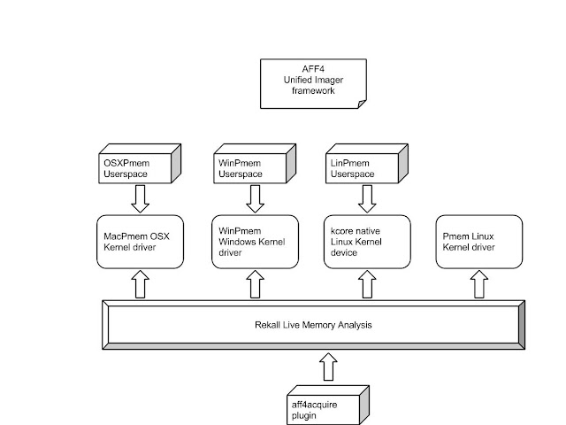

Pmem suite of memory acquisition tools
This article was copied from the Rekall Forensics blog, posted on 2016-05-24. Copied with permission for historical preservation.
The recent Rekall Furka release updated the pmem suite of acquisition tools, so I thought this would be a good time to write a blog post about the new features and to recap the work we have been doing on reliable and robust memory acquisition for Linux, Mac OS X and Windows.
The Pmem memory acquisition suite
The Pmem suite of memory acquisition tools are already quite well known as the best open source memory acquisition tools available, and in the case of Mac OS X, the only reliable memory acquisition solution available for the latest versions of the operating system. This blog post discusses some of the recent changes we made in the recently released pmem 2.1 series of acquisition tools. The old Winpmem 1.6.2 tool is still available and it is perhaps the most stable and battle tested, but the new series offers many advantages, so it might be worth testing these with your own incident response procedures.
While access to physical memory is different on each operating system, we tried to unify the userspace component as much as possible. This should make it easier to use because the same command line options are available on each operating system. Previous tools had completely different sets of options, but now most of the options are the same across all target OSs.
OSXPmem, WinPmem, LinPmem ... So many pmem's
The Pmem suite offers a complete memory acquisition solution and consists of a few different sub-components. It is sometimes a bit confusing when we talk about so many different things all called pmem.
Here is a high level overview of the different components:

We see that there are four main kernel based components to facilitate access to physical memory:
- On Mac OS X, the MacPmem memory driver provides direct access to physical memory.
- On Windows, the WinPmem kernel driver provides physical memory access.
- On Linux, we mainly rely on the built in /proc/kcore device which is often enabled. This provides raw physical memory access natively.
- Sometimes, however, on Linux, the kcore device is disabled. In that case we also provide the pmem kernel driver which facilitates physical memory access.
All the kernel components enable access to physical memory, which we use to implement memory acquisition and live analysis. The memory acquisition tools are OSXPmem, WinPmem (2.1) and LinPmem are operating system specific acquisition tools. They all use the same unified AFF4 imager framework and therefore all have similar command line arguments, and produce images in the same way.
Finally, Rekall can use all kernel components directly when performing live analysis on all supported operating systems. Rekall also has a plugin called aff4acquire which uses this raw physical memory access to acquire a physical memory image, in a similar way to the standalone tools. Memory acquisition through Rekall is able to include additional data which can only be deduced from live analysis (e.g. it also captures all mapped files) but it requires running Rekall (with larger footprint and requires access to the profile repository).
What is AFF4 anyway, and why are you forcing me to use it
Because the pmem imagers use the unified AFF4 imager framework, the pmem acquisition tools always write AFF4 images. What does that mean?
I know that many people are still using RAW or ELF images, mainly in order to interact with other tools that do not support AFF4 directly. Maybe users are not ready to commit to a new file format which is potentially not compatible with other tools?
AFF4 (Advanced Forensic Format 4) is a concept, as well as a file format. The main features of AFF4 are that it defines containers, streams and metadata:
- A stream is an object which supports randomly seeking and reading in. For example, a regular file on disk is a stream. AFF4 also defines other stream formats.
- Similarly, a container is just something that contains streams. For example, a regular filesystem directory is also an AFF4 container. By default pmem will use a ZIP file as a container but it can easily use a directory instead.
- Finally, AFF4 contains metadata about the image. This is something you always want for memory acquisition - the more data the better! AFF4 stores metadata in RDF Turtle format by default, but Pmem also uses YAML.
The nice thing about AFF4 therefore, is that it is actually completely compatible with simpler file formats, such as RAW but at the same time, due to the additional metadata included, tools that understand AFF4 can make use of that automatically.
So when we say we only write AFF4 images, we really mean that the images that are produced are written in a structured way, but these images can also be made to look like a RAW or ELF image to other tools.
Let me see examples
Let's take a look at an example. In this example, I am acquiring memory from a Mac OS X system into a standard AFF4 ZIP container. This is the default output format:

In this example we specified:
- -o test.aff4 write output into this file.
- -t - output file will be truncated
- -c snappy : Use Snappy compression. This is much faster than the default zlib compression and still pretty good compression.
The resulting AFF4 file is stored in a ZipFile container. What does that look like?
We can use osxpmem to show us some metadata about the image:

The volume contains two streams:
- The first stream (ends with dev/pmem) is a map with a category of physical memory. This is the actual memory image.
- The second stream is an aff4:image which stores bulk image data, divided into compressed chunks.
An AFF4 map is an efficient construct which allows use to store sparse images (with holes) such as memory images which usually have gaps for PCI DMA regions. We do not need to waste any space on sparse gaps. The Map itself is backed by a regular AFF4 image stream which uses compressed chunks to store the bulk data in the image. Hence we get both compression and sparse image.
We can use the regular unzip command to inspect it (NOTE: The default unzip that comes with Mac OS X does not support ZIP64 very well so it reports the file as slightly corrupted. It is not, in fact corrupted at all and a proper unzip utility will support it well).
We can see some members in the ZIP file:
- information.turtle contains RDF information about this AFF4 container.
- dev/pmem/idx stores the map transformation (very small)
- dev/pmem/data is the bulk data stream
- dev/pmem/data/00000XXXXX are the segments which store the compressed chunks
- dev/pmem/data/00000XXXXX/index are indexes for each segment
This image works well with Rekall which supports AFF4 natively:

But, suppose I wanted to use another program with this image, so I really want RAW output.
We could always export the memory image from the AFF4 volume into a raw file:

But this might be inconvenient. What if we wanted to acquire to RAW format in the first place? Pmem offers support for the following memory image formats:

It is important to note that the --format option talks about the format of the memory stream (i.e. RAW) not the format of the container which is still an AFF4 Zip based file. In the following example, I will create a ZIP file with a huge RAW memory image in it.
This is fine and it is very useful when you want to acquire a bunch of files off the same system (e.g. memory, pagefiles, drivers etc). In the end you just get a simple (but very large) ZIP file with all the files inside it - convenient for easy transport off the system. Note that even though the RAW image is stored in a ZIP file it is not compressed - so the ZIP file is still huge. This is because Rekall can use the ZIP file directly then without needing to unpack it first (You can not seek in a compressed archive member). The RAW image is just a single large uncompressed archive member.
This is still not that useful for running other tools on the image - we will need to unzip the image first so we can point our tool at it. Remember that I mentioned above that a simple filesystem directory is also an AFF4 container? Why don't we write the image into a directory?
In order to make pmem choose an AFF4 directory container you just specify a directory path. So you need to create a directory first:

Remember that AFF4 containers just store streams so it is exactly the same as the previous example, except that the files are written to a directory instead of a single Zip file. However, in this case, you will find the huge RAW physical memory file (dev%2fpmem) inside the directory - ready to be viewed with another tool:

Note also the metadata files which contain important information about the memory collected:

Rekall, however, understands AFF4 volumes so it can use the metadata directly to bootstrap analysis (e.g. use the correct profile automatically). Note that when we use Rekall we should specify the path to the entire directory, not the path to the RAW image inside the directory (So Rekall understands we mean the AFF4 volume to be used).
Adding files
We often only get one chance to acquire memory. We need to make sure that everything we might need in the analysis phase will end up in the image. For example, sometimes after analysis we see a mapped file that is of interest in the memory image. But trying to dump files from memory is not very reliable since many pages are missing - it would have been better to acquire these files in the first place.
The nice thing about AFF4 containers is that they can store multiple streams - i.e. they can capture more than one file. The Pmem suite tries to acquire as many files as it can automatically. For example, in Windows the pagefile can be acquired, as well as all the drivers and the kernel image itself. In Linux, the contents of /proc/kallsyms is captured as well as the /boot/ partition.
It is possible to include other files during acquisition. This can be done during the memory acquisition or later, by appending to the AFF4 volume.
Note that by default, when you specify the -i flag, pmem assumes you want to add files to an existing volume and does not acquire memory. You can force memory acquisition and file inclusion at the same time with the -m flag.
The Winpmem acquisition tool
The driver component of Winpmem has been stable for many years now. Like the MacPmem driver, it uses advanced page table manipulation to bypass any OS restrictions (which have been presented at DFRWS 2013). So this release of winpmem reuses the same driver as Winpmem 1.6.2 - the only difference is in the userspace tool.
The OSXPmem acquisition tool
The Mac OS X counterpart of the pmem suite comes as a ZIP file. To use it you simply need to unzip it as root (note: You must be root when unzipping on order to ensure proper file permissions. The extracted files must be owned by root and only readable by root).